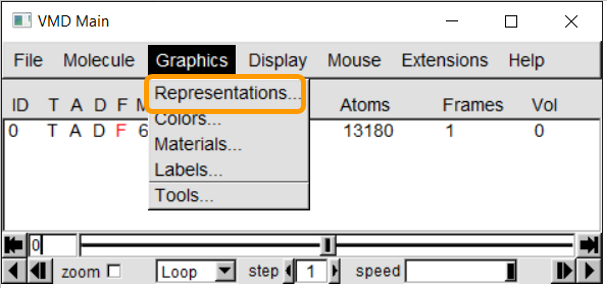
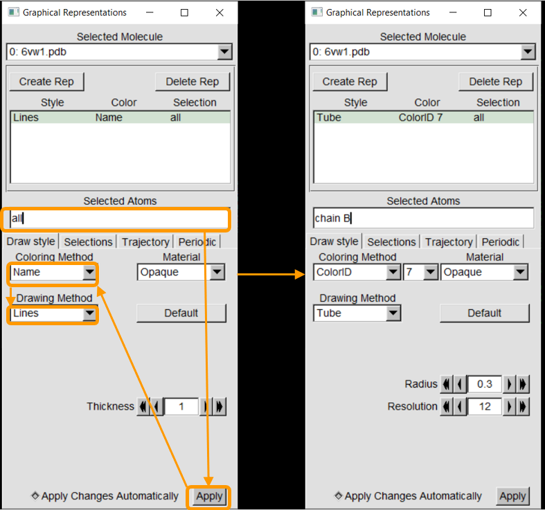
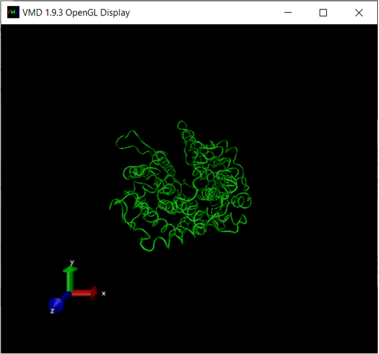
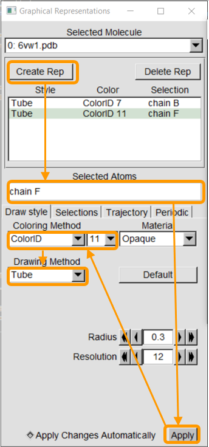
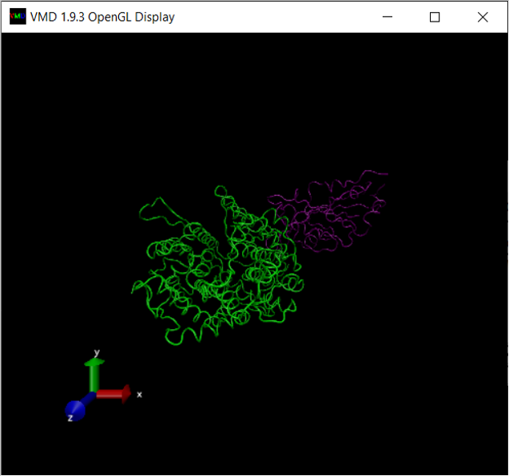
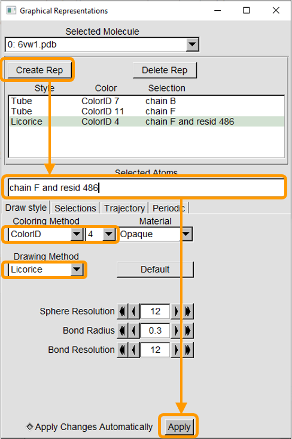
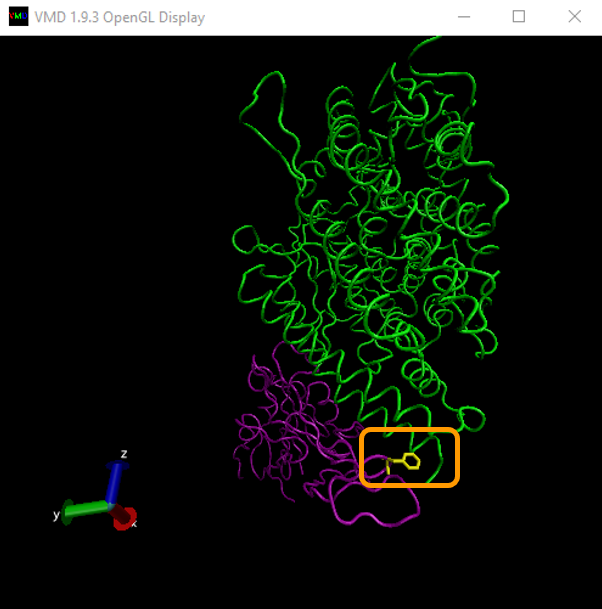
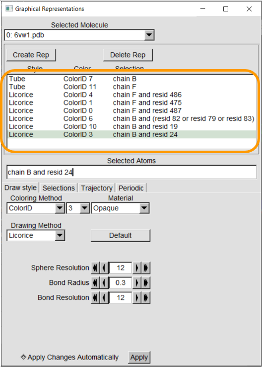
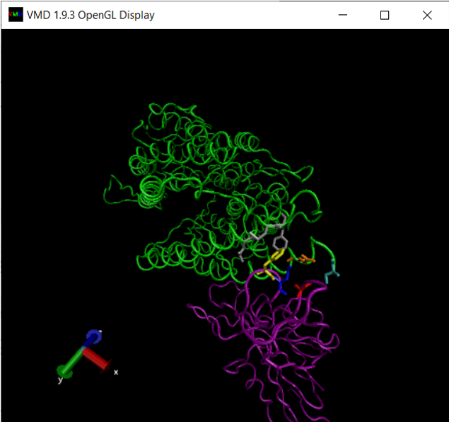

Software Tutorial: Visualizing Specific Regions of Interest within the Spike Protein Structure
In this tutorial, we will discuss how to visualize a protein structure and highlight specific amino acids of interest in the protein. We will focus on the region that we identified in the previous tutorial starting at around position 475 of the SARS-CoV-2 RBD, where we found that this RBD differs structurally from that of SARS-CoV.
We will visualize the site in the SARS-CoV-2 RBD using the SARS-CoV-2 chimeric RBD complexed with the human ACE2 enzyme (PDB entry: 6vw1). Before completing this tutorial, you should have installed VMD and know how to load molecules into the program. If you need a refresher, visit the previous tutorial.
First, download the chimeric RBD .pdb file and load it into VMD.
To change the visualization of the protein, click Graphics > Representation. Double clicking on a representation will enable/disable it.

The file 6vw1.pdb contains two biological assemblies of the complex. The first assembly contains Chain A (taken from ACE2) and chain E (taken from RBD), and the second assembly contains chain B (ACE2) and chain F (RBD). We will focus on the second assembly.
We will first add chain B, from the ACE2 enzyme, and color it green.
-
Selected Atomsallows you to select specific parts of the molecule. The keywordallselects all atoms in the file, and so replaceallwithchain B. Then, clickApply. (In general, to choose a specific chain, use the expressionchain X, whereXis the chain of interest. To choose a specific residue (i.e., amino acid), use the keywordresid #. Expressions can be combined using the keywordsandandor, and more complicated selections need parentheses. -
Coloring Methodallows you to change the coloring method of the selected atoms. This includes coloring based on element, amino acid residue, and many more. To choose a specific color, selectColorID. A drop-down list will appear to color selection. Choose “7” to select green. -
Drawing Methodallows you to change the visualization of the selected atoms.Lines(also known aswireframe) draws a line between atoms to represent bonds.Tubefocuses only on the backbone of the molecule.Licoricewill show both the backbone and the side chains of the protein.Cartoon/NewCartoonwill show the secondary structure of the molecule (protein). We are interesed mostly in the backbone, and so we will chooseTube.

At this point, your OpenGL Display window should look like the following:

We next add chain F, from the SARS-CoV-2 chimeric RBD, and color it purple. Click Create Rep, which will duplicate the previous representation. Then, change Selected Atoms to chain F and ColoringID to “11” to color the chain purple. Make sure your other selections are as follows:

You should now see two distinct colored structures!

We can also change our visualization to target specific amino acids by creating another representation and specifying the amino acid with the keyword resid followed by the position of this amino acid residue.
For example, say that we are interested in residue 486 in the RBD (which is phenylalanine). Click Create Rep. In the new representation, change Selected Atoms to chain F and resid 486 and click Apply. Then change the Coloring Method to ColorID and 4. Finally, change the Drawing Method to Licorice.

In the OpenGL Display window, you will now see a new yellow projection coming out of the RBD, as shown in the image below. This is residue 486! You may need to rotate the protein a bit to see it. (Instructions on how to rotate a molecule and zoom in and out within VMD were given in our tutorial on finding local protein differences.)

Let’s now color a few more residues from our region of interest: residues 475 and 487 of the RBD, and residues 19, 24, 79, 82, and 83 of ACE2. As we return to the main text, we will explain why these residues are implicated in binding affinity.
Coloring these residues is analogous to the previous steps of just adding new representations and changing Selected Atoms, Coloring Method, and Drawing Method. Make the following representations; note the colors that we use.

Your final visualization should look like the following figure.

Congratulations! You have now created a detailed visualization of the RBD-ACE2 complex that focuses on our site of interest. As we return to the main text, we will discuss how the highlighted amino acids help increase the binding affinity of the SARS-CoV-2 spike protein to ACE2.
STOP: Create another visualization of the same site using the SARS-CoV RBD complex with ACE2 (PDB entry: 2ajf). How does it compare with your first visualization of SARS-CoV-2 complex? Use the graphical representations shown in the table below.
SARS-CoV RBD with ACE2 (2ajf)
| Protein | Style | Color | Selection |
|---|---|---|---|
| SARS-CoV RBD | Tube | ColorID 11 | chain F |
| SARS-CoV RBD | Licorice | ColorID 4 | chain F and resid 472 |
| ACE2 | Licorice | ColorID 6 | chain B and (resid 82 or resid 79 or resid 83) |
| ACE2 | Licorice | ColorID 10 | chain B and resid 19 |
| ACE2 | Licorice | ColorID 3 | chain B and resid 24 |